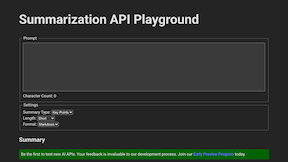
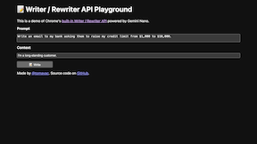
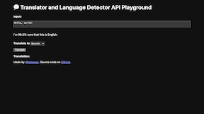
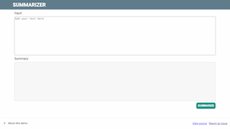
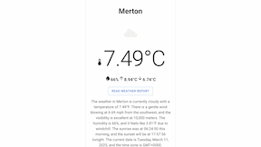
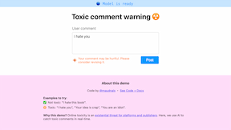
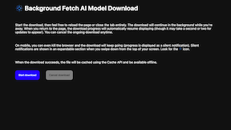

Client-side AI uses models hosted on device, which means inference occurs on-device. Built-in AI is one type of client-side AI, which uses models built into the browser.
Built-in AI demos
Google is developing web platform APIs and browser features that work with AI models, including large language models (LLMs), built in the browser. With built-in AI, your website or web application can perform AI-powered tasks without needing to deploy or manage its own AI models.

Summarizer API Playground
A playground demonstrating the capabilities of the Summarizer API.
Open

Writer/Rewriter Playground
A playground demonstrating the capabilities of the Writer and Rewriter APIs.
Open

Translator/Language Detection Playground
A playground demonstrating the capabilities of the Translator API and Language Detection API.
Open

Summary of Summaries Demo
Overcome the context window limitation of the Summarizer API by recursively breaking the input text into chunks, summarizing each chunk, and then summarizing the summaries.
Open

Prompt API Weather Demo
Generate human readable descriptions from structured data using the Prompt API, then read the weather description aloud with the Web Speech API.
Open
Built-in AI Planning
Break goals into plans and plans into tasks with the help of the Prompt API.
Open
Built-in AI Session Management
Demonstrates best practices for managing AI sessions with the Prompt API.
Open
Client-side AI demos
Perform inference on-device or in the browser, protecting sensitive data and improving latency.

Toxic Reviews Detector
Use a client side model with Transformers.js to detect toxic reviews and help users improve them.
Open

Background fetch AI models
This demo uses Background fetch to download the model. Once the download starts, reloading the page or even closing the tab won't stop the download. It will continue in the background so when the user returns to the page, they can pick up where they left off.
Open